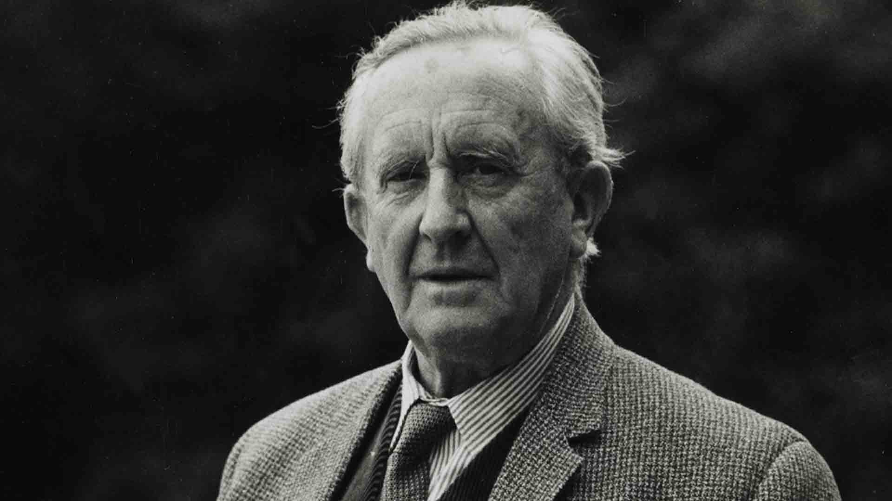

J.R.R. Tolkien

Summary
I am a diligent person who enjoys reading,writing, and conducting research.
Education
- Oxford Exeter College (1911-1915)
Work Experience
- Rawlinson and Basworth Proffesor
1925-1945
- Professor of English Language and Literature at Merton
1945-1956
Skills
- Writing⭐️⭐️⭐️⭐️⭐️
- Reading⭐️⭐️⭐️⭐️⭐️
- Researching⭐️⭐️⭐️⭐️⭐️
Awards and Certifications
- Locus Award for Best Fantasy Novel(1975)
Other